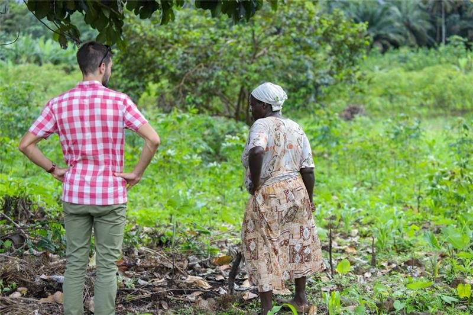

From origin to market, we build and control integrated, organic and traceable value chains. To turn exceptional raw materials into products tailored to our clients' needs.
It is this reading, from origin to market, that makes Valúdo a partner and not just a supplier. We connect three dimensions too often handled separately.

We build and secure value chains at origin to guarantee quality, traceability and reliable sourcing.

We master the challenges of processing, quality, format and compliance to meet the expected specifications.

We build offers tailored to real uses, client expectations and the realities of each market.
We support manufacturers, distributors and brands in building sourcing and products suited to their markets.
Secure your sourcing with reliable, traceable value chains, suitable industrial formats and European availability.
Learn more →Structure an offer tailored to your market, from ingredient to finished product, private or white label.
Learn more →Materials chosen for their origin, their properties and their value potential in your formulations.
Learn more →Virgin and deodorised oils, coconut water, flour, coconut sugar, desiccated coconut, chips, milk, powder and other ingredients from the coconut.
Discover the Coconut range →Butters and ingredients from our African value chains, for food and cosmetic applications.
Discover the Shea range →A specific need? Looking for another material or a particular origin? We also develop custom sourcing solutions, with the same requirements of quality, traceability and value-chain control.
Get in touch →We are present at origin, alongside producers and processing partners, to control the material all the way to the delivered product.

Where broker prices follow trading and swing widely from season to season, our value-chain approach can, depending on products and origins, help build medium-term price commitments and reduce exposure to market volatility.
Since 2014, Valúdo builds its value chains alongside producers, collectors and processing partners. From São Tomé to new African and Asian origins, we apply the same requirements of quality, traceability and impact.


Integrated value chains, built with our local partners and monitored to Valúdo standards.
Valúdo is part of Groupe Duval, a mission-driven company engaged for over 30 years in the economic and social development of territories, notably across the African continent.


 Valúdo's own commitment
Valúdo's own commitment
Certifications available depending on value chains and products. Up-to-date certificates available on request.